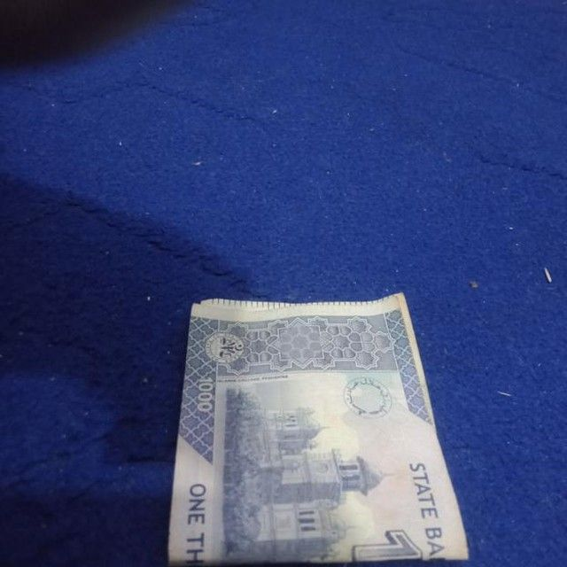
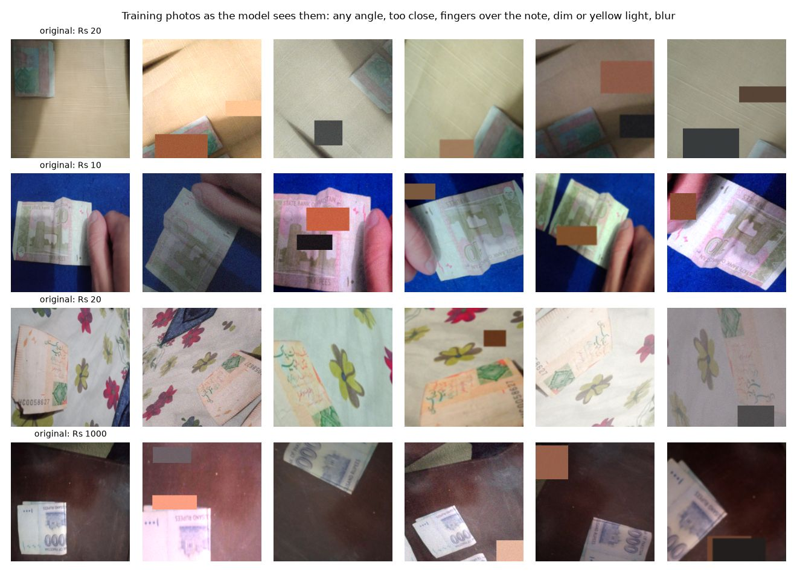

Pakistani Banknote Reader
Point your phone at a note. It says the value out loud.
نوٹ کیمرے کے سامنے رکھیں، یہ بول کر بتائے گا کہ کتنے روپے کا ہے
A free web app that reads Pakistani banknotes out loud for blind and low-vision people. It recognises all seven notes in circulation (Rs 10 to Rs 5,000), front or back, folded or upside down, and speaks in Urdu or English. It runs inside the browser, works offline after the first visit, and needs no app, no account and no upload.
Try it now.
Use your camera, upload a photo, or tap a test photo. Everything runs on this device, so no picture ever leaves it.
Every note is a question.
Paying in cash is still how most of Pakistan buys things. For a person who cannot see, each note asks: is this five hundred or five thousand? The usual answer is to ask a stranger and trust them.
1.1 million
blind people in Pakistan (GBD 2017 estimate, Hassan et al., PLoS One 2019).

Rs 4,500
lost in one mistake between these two notes.
The whole project, in under four minutes.
In my own voice: the problem, the data, the honest numbers and a demo. Also on YouTube, or download it in 4K.
Read the transcript
Assalam o alaikum. I'm Hassan Ali Mehdi and this is a Pakistani banknote reader for blind people. You point your phone at a note and it tells you the value out loud in Urdu.
Pakistan has about 1.1 million blind people and most daily payments are still made in cash. Our seven notes differ only a little in size so a blind person usually has to ask a stranger which note is which, and trust the answer. Mixing up a 500 and a 5000 costs 4,500 rupees.
The reader is just a webpage. It reads the camera 4 times a second and speaks the value in Urdu or English with a recorded voice. So it works even on phones that have no Urdu speech. It stays silent when it is unsure because saying a wrong amount is worse than saying nothing. Once loaded, it works offline, it also vibrates a code and it works with screen readers.
I trained on a public dataset of 3,600 real phone photos, 7 notes front and back, many folded or half visible. I added a no note class with more than 1000 everyday photos so the model learns when to stay quiet.
Before trusting any number I checked whether the test photos were really new. I hashed every photo and found that 339 of the 402 test photos in a second public currency dataset are near copies of the first one. Only 63 were genuinely new. Without this check my external test would have looked perfect and meant nothing.
Training images are changed on the GPU every time they are seen: any angle, too close, half out of frame, fingers over the note, dim or yellow light, and blur. No mirror flips because the camera never sees a mirrored note.
I compared a CNN trained from scratch with two phone networks pretrained on ImageNet: MobileNet version 3, and the new MobileNet version 4. On photos from the same dataset, all three are almost perfect. On photos taken by other people the difference shows: transfer learning holds up far better. I deployed MobileNet version 3 Large, the best on validation and also the fastest.
Here are the honest numbers. 100% on unseen photos from the same dataset but 92% on photos by other people. And on those photos, it never said a wrong amount. The first number mostly shows how alike the dataset photos are. The others are what a real user would get.
The most important design decision is when to speak. On ordinary validation photos, the model is almost never wrong. So any threshold looks safe. So I calibrated on a stress test: every validation photo four times. The app speaks only above 0.68 confidence and only when three frames in a row agree.
Here is a live demo. I open the site on my phone, tap start camera and hold a note in front of it. It reads several frames per second and speaks the value with nothing installed.
Its limits. The training photos only show a few physical notes, per value. It knows the current note design but not the State Bank's new series. It reads one note at a time and it does not detect counterfeits. Next, worn notes counting a whole handful and a test with blind users is what's coming next.
Everything is open. The website, the code, the weights, the data splits are all linked. Thank you for watching.
Made to be used without looking.
Reads the camera four times a second
Hold a note up and move it around. There is nothing to line up and nothing to press.
Speaks Urdu or English
A recorded voice, so it works even on phones that have no Urdu speech.
Works offline after the first visit
The model, the runtime and the voices are saved on the phone. No app, no account, no upload.
Vibrates a code on Android
One to four short buzzes for Rs 10, 20, 50 and 100. One to three long buzzes for Rs 500, 1,000 and 5,000.
Works with screen readers
TalkBack and VoiceOver announce each result from a live region, and every control is a large button.
Stays silent when unsure
Saying a wrong amount is worse than saying nothing, so it waits until it is sure.
Saying nothing beats saying the wrong amount.
On ordinary photos the model is almost never wrong, so any threshold looks safe. So I calibrated on a stress test: every validation photo four times, with hard augmentations. That is 2,940 photos. The threshold is the lowest that keeps wrong answers to at most 1 in 500.
and three frames in a row must agree:
Rs 5,000Rs 5,000Rs 5,000339 of 402 “new” photos were not new.
Before trusting any number, I checked whether the test photos were really new. I hashed every photo (perceptual hash, 64 bits) and joined photos within 8 bits of each other. Only 63 of the test photos in the second public dataset are genuinely new. A model tested on that set without this check would look far better than it is.


339 near-copies, removed63 genuinely new, kept

Pakistan Image Currency Dataset
Training. Kaggle (rafayqayyum), CC0. 3,611 phone photos of the 7 notes, front and back (14 classes), plus 280 “other” photos. Notes folded, in hands, on bedsheets.
Imagenette
“No note” photos. 1,000 everyday photos (fast.ai's ImageNet subset), so the model learns to stay silent when no note is in view.
Roboflow currency set
External test. Kaggle (muhammadasjadali), CC BY 4.0. Used only for testing, never for training.
| Split | Photos | Used for |
|---|---|---|
| Train | 3,429 | learning the weights |
| Validation | 735 | picking the best epoch and the speaking threshold |
| Test (same dataset, unseen photos) | 727 | headline number |
| External test (other photographers) | 63 | does it generalise beyond one dataset? |
Three models, same data. One test that matters.
On photos from the same dataset all three are almost perfect. On photos taken by other people the difference shows: transfer learning holds up far better. I deployed MobileNetV3-Large, the best on validation and also the fastest.
CNN from scratch
Random weights, 5 conv blocks, 2.36M paramsMobileNetV3-Large
ImageNet start, 2019, 4.22M params. Deployed.MobileNetV4-Conv-Medium
ImageNet start, 2024, 8.45M paramsBars run from 70% to 100%. Same recipe for all three: AdamW, cosine schedule with warm-up, label smoothing 0.1, 40 epochs (80 for the scratch CNN), on one NVIDIA L4 on Google Colab. Exported to ONNX and run by ONNX Runtime Web.

Trained for how blind people actually hold notes.
- Any rotation, zoom 0.85–1.9×, stretch and shift: upside down, too close, half out of frame.
- Finger-sized patches of skin or shadow over the note.
- Dim rooms, yellow bulbs, colour casts, blur and sensor noise.
- 15 classes: 7 notes, front and back, plus “no note”. The app adds front and back.
- No mirror flips: a camera never sees a mirrored note.
The honest numbers.
100.0%
right value on 727 unseen photos from the same dataset.
92.1%
right value on 63 photos taken by other people.
0 wrong
amounts spoken on those 63 photos. It stayed silent on 8.
The first number mostly shows how alike the dataset's photos are. The others are what a real user would get.
The deployed model is MobileNetV3-Large, chosen on validation photos. On 727 unseen test photos it names the note value correctly 100.0% of the time; at the speaking threshold it would say a wrong value on 0.0% of photos and speaks on 99.4% of the photos that show a note. On 63 photos by other photographers it reaches 92.1%, and at the speaking threshold it says no wrong amount (it stays silent on 8).
| Model | Params | Test accuracy | Wrong value said | Speaks on note photos | External test | CPU ms |
|---|---|---|---|---|---|---|
| CNN from scratch | 2.36M | 99.6% | 0.0% | 93.8% | 82.5% | 88 |
| MobileNetV3-Large (deployed) | 4.22M | 100.0% | 0.0% | 99.4% | 92.1% | 15 |
| MobileNetV4-Conv-Medium | 8.45M | 99.9% | 0.0% | 99.3% | 92.1% | 37 |


What it can't do yet.
- Trained on photos of a few physical notes per value, mostly on similar indoor backgrounds; very worn, torn or taped notes are under-represented.
- Knows the 2005–2008 note designs. The State Bank of Pakistan's new series will need new photos and retraining.
- Reads one note at a time; two overlapping notes give one answer.
- Not a counterfeit detector.
- External test has only 63 genuinely new photos after removing near-copies, so its confidence interval is wide.
- Not yet tested with blind users; that is the next step.
Test it yourself
git clone https://github.com/Hassan-Ali-Mehdi-3024/boltanote cd boltanote && pip install -r requirements.txt python evaluate.py # 16 bundled photos python predict.py samples/500_front_1.jpg
Weights: weights/boltanote.onnx (ONNX), weights/boltanote_torchscript.pt (TorchScript), weights/<model>.pt (PyTorch).
Questions, answered.
What is the Pakistani Banknote Reader?
A free web app for blind and low-vision people in Pakistan. You point a phone camera at a banknote and it says the value out loud in Urdu or English. It runs in the browser, so there is no app to install.
How do I use it?
Open https://boltanote.vercel.app in a phone browser, tap Start camera, and hold a note in front of the camera. It says the value as soon as it is sure. With no camera, you can upload a photo or tap a test photo.
Which Pakistani notes can it read?
All seven notes in circulation: Rs 10, 20, 50, 100, 500, 1,000 and 5,000, front or back, including folded or upside down. It knows the 2005–2008 designs, not the State Bank's new series.
Is it free, and does it need an account?
It is free, with no account and no install. The code is open source under the MIT licence.
Does it work offline?
Yes, after the first visit. The model, the runtime and the voice clips are saved on the phone, so it keeps working and reopens with no internet.
Are my camera pictures uploaded anywhere?
No. Every picture is processed on the phone, inside the browser. Nothing is sent to a server.
How accurate is it?
It names the value correctly on 100.0% of 727 unseen photos from the same dataset, and 92.1% of 63 photos taken by other people. On those 63 photos it spoke no wrong amount and stayed silent on 8. The first number mostly shows how alike the dataset's photos are; the second is closer to real use, but 63 photos is a small test.
When does it stay silent?
It speaks only when it is at least 68% sure and three frames in a row agree, because saying a wrong amount is worse than saying nothing. The 0.68 threshold keeps wrong answers to at most 1 in 500 on a stress test of 2,940 hard, augmented validation photos.
Does it work with screen readers?
It is built for them: results are announced to TalkBack and VoiceOver through a live region, every control is a large button, and on Android it also vibrates a code for each note. It has not yet been tested with blind users; that is the next step.
Can it detect counterfeit notes?
No. It reads the value of a note and does not check whether the note is genuine. It also reads only one note at a time.
Which model does it use?
MobileNetV3-Large, pretrained on ImageNet and fine-tuned to 15 classes: seven notes, front and back, plus "no note". It runs with ONNX Runtime Web and takes about 15 ms per photo on a CPU. It was compared with a CNN trained from scratch and MobileNetV4.
What data was it trained on?
The Pakistan Image Currency Dataset (CC0) of 3,611 phone photos, plus 1,000 Imagenette photos for the "no note" class. A hash check found 339 of 402 photos in a second public dataset were near-copies of the first, so only the 63 new ones were used as the external test.
Who made it?
Hassan Ali Mehdi, as a Deep Learning semester project at Superior University, Lahore (BSCS-7A), under Dr. Munir Ahmad, November 2026.
Where are the code, weights and report?
The code, weights and data splits are at https://github.com/Hassan-Ali-Mehdi-3024/boltanote, and the report is at https://boltanote.vercel.app/report.pdf. Every link, with its alternate, is in the links section of this page.
Is there a LinkedIn post?
No. Due to legal commitments with the company where I work, I can't use my LinkedIn for personal use while I'm employed there.
Everything, with an alternate link.
Every part of the project lives on two separate hosts, so one outage never breaks a link. Machine-readable list: /project.json · guide for AI crawlers: /llms.txt · full text: /llms-full.txt.
Try and watch
This website
the live reader and this page (Vercel, GitHub Pages)
Video presentation (YouTube)
under four minutes, in my own voice; alternates: on this site, and a 4K download
LinkedIn post
no post
Due to legal commitments with the company where I work, I can't use my LinkedIn for personal use while I'm employed there.
Read
Report (PDF)
full write-up
Report (web page)
the same report, as a page
Code and model
GitHub repository
code, weights, splits, notebook; the alternate is the source code as a zip
Model weights (ONNX)
the deployed model, weights/boltanote.onnx
Model weights (TorchScript)
weights/boltanote_torchscript.pt
PyTorch checkpoints
weights/*.pt, all three models
Training notebook
Colab, all outputs
Model card (JSON)
inputs, outputs, threshold, metrics
Project summary (JSON)
every result and link, for machines
Data
Main dataset
Pakistan Image Currency Dataset, CC0; Kaggle and an unchanged mirror
External test set
Roboflow currency notes, CC BY 4.0; Kaggle and an unchanged mirror
"No note" photos (Imagenette)
fast.ai's ImageNet subset; project page and download
Data splits (CSV)
every file and its split